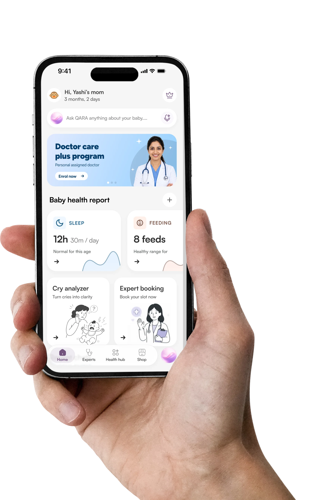
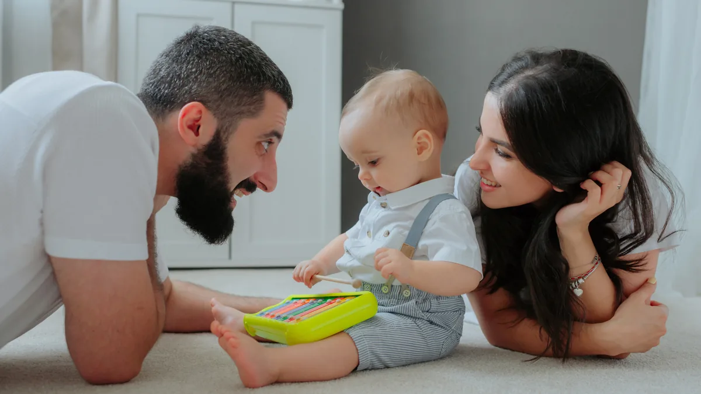
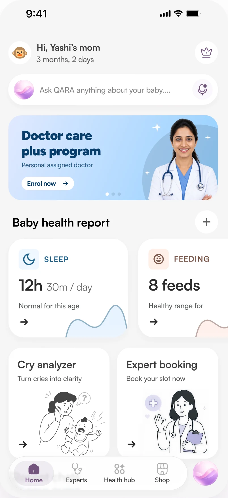
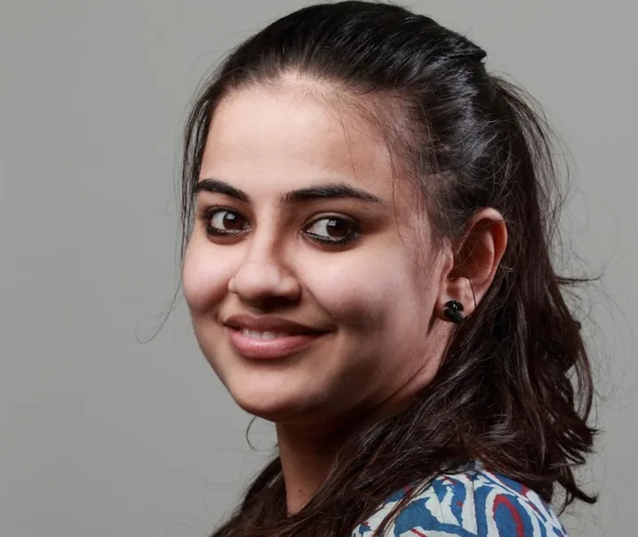
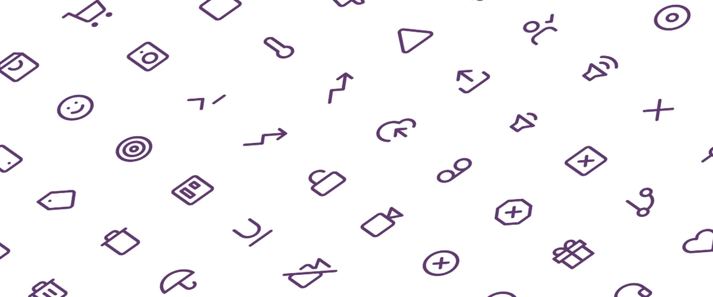
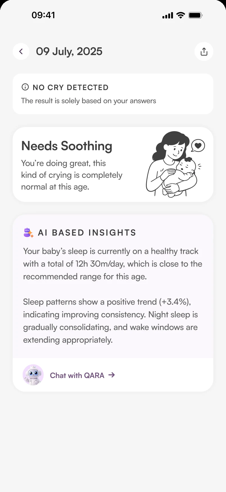
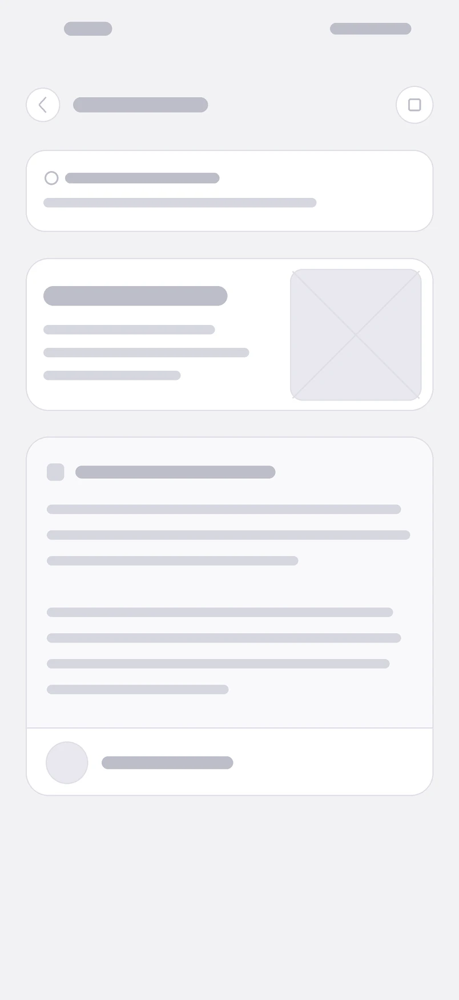

Problem
Babies cry to express everything hunger, pain, tiredness, or discomfort.
But parents often struggle to understand what the cry means.
This communication gap leads to anxiety, confusion, and, worse delays in care.

Redefining Babycare,
Reimagining Parenthood
A doctor-led co-parent for a baby's first 1,000 days. Pukaar.ai answers a frightened parent at 2 a.m. and in the same motion builds the longitudinal infant health record India doesn't have.

Babies cry to express everything hunger, pain, tiredness, or discomfort.
But parents often struggle to understand what the cry means.
This communication gap leads to anxiety, confusion, and, worse delays in care.
Starting with a cry analyzer and smart health screening, our vision is to evolve into a full-stack, AI-powered platform that learns from every pattern to predict risks, enable early action, and support parents with confidence every day, every night.
We're not guessing what mothers want. We're learning directly from them.
Each message is a window into what real care looks like.
Real questions from the community channel. Names are redacted. Select a message to read it larger.
83% of the women go through anxiety postpartum
85% parents don't know whom to trust for parenting decisions.
3/5 parents suffer postpartum symptoms
Direct competitors: 0 (India), 1 (NannyAI-Global)
Indirect competitors: Mylo, Healofy, Babychakra
| Feature |
|---|
Select a product name to highlight its column.
Swipe sideways to see every product


It's three in the morning and I don't know if this is normal. I don't want to wake a doctor. I just want someone to tell me.
Composite persona, built from 70+ user interviews, a 400-parent community channel and the 50+ questions it receives every day.

Icon libraryThis is the flow the whole product is judged on. Every other journey can afford a second attempt; this one cannot.
In grey, it was obvious that asking four questions before a parent can even start recording is homework while the baby screams. The questionnaire moved behind the capture.
Chat with QARA and the under-15-minute consult live on the report itself, not behind a menu, not one screen away.
The most important screen in the product, at two fidelities. Same structure. Everything that changed, changed for a reason.


Drag to compareA frightened parent cannot execute a list. The sentence that calms her has to land before the instructions do.
Needs Soothing is a label, not an answer. It was demoted so the plain-language explanation carries the screen.
Why I think that earns a component. Explanation is what separates guidance from a confident guess.
Chat with QARA and the under-15-minute consult sit on the screen, not behind a menu.
Each one came out of the research, not out of taste. Each one is visible in the final screens.
One glance answers is this normal and who to call. QARA sits above the fold as the first action, and logged sleep and feeds turn into a read against age norms.
Three steps: record the cry, answer what the caregiver sees, get a read. Every session logs, so one 2 a.m. cry becomes a pattern a paediatrician can review.
A companion, not a search box, it opens with a name and a question, not a blank chat. Every answer carries doctor-verified guidance and a path to a detailed PDF.
Verified paediatricians ranked by rating, price and availability, with an emergency slot pinned above the fold for the middle-of-the-night calls and hours.
A reading streak turns advice into a habit, not a one-off search. Every piece carries its source, a doctor or a nutritionist, so trusted guidance stays close by.
Access without exposure: an invite that limits what a caregiver can see.
Pukaar.ai isn't just about decoding a cry it's about ending the not-knowing, at the hour when nobody else is awake.